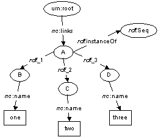

XUL Template Primer
Contents
OverviewExample
The
datasources attributeThe
ref attributeThe
<template> elementThe
<rule> elementThe
<conditions> elementThe
<action> elementRelated Documents
Notes
Overview
This document is a brief tech note intended to introduce XUL templates to someone new to the subject. It describes the extended XUL template syntax using a simple example.
XUL templates are a way of embedding "live data" into a XUL document. A XUL template is a collection of rules that is used to build XUL and HTML content from one or more RDF datasources. A template specifies a "cookie cutter" content model pattern, along with the conditions indicate when the pattern should apply.
Once a template has been specified, the Mozilla handles the construction of the XUL (or HTML) content by copying the "cookie cutter" pattern and "filling it in" with appropriate values derived from the underlying RDF datasources. If the information in the datasource changes, the XUL template engine keeps the generated content current.
In short, XUL templates allow a content author to present live data as XUL or HTML content, without writing complex content-construction and synchronization code.
Example
To understand the extended XUL template syntax, will examine the folloing XUL document.
We'll examine it piece by piece to illustrate what it's doing.
The datasources attribute
The datasources attribute on the box
element indicates that RDF datasources that should be used
to build XUL. This attribute is a whitespace-separate list of
datasource URIs. 1
In this example, the single URI template-primer.rdf is
resolved relative to the XUL document containing this XUL fragment,
and is loaded as RDF/XML. For example, if this fragment was
contained in
http://www.mozilla.org/rdf/doc/template-primer.xul,
Mozilla would attempt to load the RDF/XML file
http://www.mozilla.org/rdf/doc/template-primer.rdf.
Let's use the following
RDF/XML file
as template-primer.rdf for the remainder of the example:
This will create an RDF model that can be represented with the following graph: 2
The ref attribute
The ref attribute on the box element
tells Mozilla the "starting point" in the RDF graph. This is often
called the "root" of the template.
In this case, it will start at the resource labelled
urn:root.
The <template> element
The template element needs to be a direct descendant
of the element with the datasources attribute. If more
than one template element exists, the first one will
be used, and the others will be ignored.
Any content that is contained within the template
element is not rendered; instead, it is used as the cookie-cutter
pattern for building other content.
The <rule> element
A XUL template uses rules to specify how a portion of the
RDF graph should be translated into a XUL content model. The rules
allow you to say things like, "an RDF resource with such-and-such a
property should be treated as a 'menu separator'; otherwise, treat
it as a 'menu item'". The rule element wraps the
conditions that specify how to determine if the rule is
matched, and action that should be taken if a match is
discovered.
Any number rule elements may appear within a
template element. (In our example above, there is only
one rule in the template.)
A rule must contain two elements as direct descendants: a
conditions element, that enumerates the rule's match
conditions, and an action element that specifies the
content that should be built if the rule is
matched. 3
The <conditions> element
The conditions element is used to enumerate the
conditions that must be met for the rule to be considered
matched. It may be empty, or include one or more
test elements. The rule is considered matched if
each of the tests passes.
In our example, the conditions element contains
four test elements.
The attributes of a test element may take on a variable
value. (For example, in the first triple test, the
subject attribute takes on a variable value,
?uri.) A rule is considered matched if all
the tests can pass with a consistent binding of a value to
each of the variables.
The content test will match an element in the
content model beneath the element with the
datasources attribute that has an id or
ref attribute.
The triple test will match a triple in the RDF
datasources with the specified subject,
predicate, and object.
The member test will match any container
membership in the RDF graph where the container is specified
by the container attribute, and the child (or member)
is specified by the child attribute
Let's look at how this works with our example.
-
First, the
<content uri="?uri">test will match the rootvboxelement, and bind the variable?urito the valueurn:root. It's convenient to think of the variable bindings as a set of (variable = value) pairs, so at this point, we have:{(?uri=urn:root)}. -
Next, the first
tripletest will probe the RDF graph, looking for a triple whose subject isurn:root, whose predicate ishttp://home.netscape.com/NC-rdf#links. It finds one, and binds the node (labelledAin the diagram above) to the?linksvariable. Now our bindings are:{(?uri=urn:root), (?links=A)}. -
Now, the
membertest probes the RDF graph. Since?linksis bound to the node labelledA, which is an RDF Sequence, themembertest discovers three possible values that can be bound to?child. Specifically, the nodes labelledB,C, andDcould all be bound to?child. This splits our bindings into three sets:{(?uri=urn:root), (?links=A), (?child=B)}
{(?uri=urn:root), (?links=A), (?child=C)}
{(?uri=urn:root), (?links=A), (?child=D)}. -
Finally, the second
tripletest probes the graph for each binding of?childas the subject, usinghttp://home.netscape.com/NC-rdf#nameas the predicate. This results in:{(?uri=urn:root), (?links=A), (?child=B), (?name= "one")}
{(?uri=urn:root), (?links=A), (?child=C), (?name= "two")}
{(?uri=urn:root), (?links=A), (?child=D), (?name= "three")}.
That is to say, the rule matches the RDF graph three times.
The <action> element
Since the conditions of the rule have matched three times, it means we need to trigger the action that the rule requires three times: once for each set of variable bindings that we've discovered.
This means that the content that appears beneath the
action element will be "copied and pasted" three times
into the content model. The resulting content model will look like
this:
Note that the content beneath the action element wasn't
exactly cookie-cutter copied. Specifically:
-
There is only one
hboxelement. -
The
uriattribute from the original content has been replaced with anidattribute -
The
?childand?namevariables were replaced with the values that they took on in the condition bindings.
The uri attribute is considered to be special when put
on an element beneath the action
element. Specifically, it tells Mozilla where the "cookie cutting"
really begins. Any elements that are ancestors of the
element with the uri attribute will be created only
once, and shared across all the cookie-cutter copies. In our
example, hbox was the only such shared element. The
element with the uri attribute, and all of its
descendants, will be copied once for each match. In our
example, treeitem, and everything below it, was copied
once for each match.
Related Documents
- XUL Template Primer - Bindings
-
Illustrates how to use the
<bindings>tag in your XUL templates. - XUL Template Primer - Multiple Rules
-
Illustrates how to write templates with multiple
<rule>elements. - XUL Template Primer - Nested Content
- Illustrates how a template can be used recursively to build nested content.
- XUL Template Primer - Outliner
- Illustrates how a template can be used as a view for a XUL outliner.
- XUL Template Reference
- Describes the simple XUL template syntax in detail.
Notes
1 We will use the convention from the
RDF Model & Syntax Specification
where the property URI
http://home.netscape.com/NC-rdf#name is shortened to
nc:name in order to make the graph more
legible.
2 There are a number of different URIs that
can be used as a datasource URI; for example
rdf:bookmarks will load a datasource that contains the
bookmarks from the current profile. Some (for example,
rdf:bookmarks) can only be accessed
from trusted XUL documents (e.g., those loaded from
a chrome: principal).
3 Note that there is a widely-used
shorthand syntax that allows a rule's conditions to be
expressed as attributes on the rule element. With this
syntax, the conditions element is omitted, and the
action element's children are promoted to be the
direct descendants of the rule element.